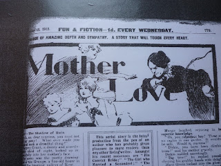
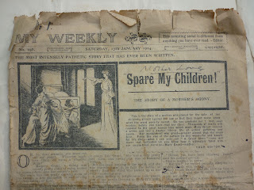
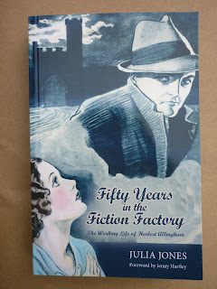

 |
| Fun and Fiction 1912 |
{kind=link}
OUR NEW FEATURES
Fresh Attractions
which will raise
discussion
WORKS OF A GREAT
AUTHOR
'Works of a great
author' is not a literary discussion at all. It's an editorial puff
for Allingham's work which, as usual, praises the writer without
naming him. In fact Cordwell does his best to convince his readers
that un-named authors are the best sort. 'If you buy an expensive
monthly magazine you see a brilliant array of names which are
familiar to you and you read stories by men who have long ago laid
the foundation stone of their success. Often you are disappointed in
these stories and the reason is not far to see. It is not that your
judgement is at fault, it is not that you are unable to appreciate
really good fiction, it is merely the fact that many once-famous
writers trade upon their names.'
It's
unlikely that Cordwell's readers would have put his theories to the
test by buying 'expensive monthly magazines'. Fun and
Fiction was a weekly publication and cost a penny whereas most of
Allingham's readers at this time preferred to pay only a halfpenny.
Some of these readers can be glimpsed in a social survey, Boy Life
and Labour by Arnold
Freeman. Freeman was based in Birmingham's Woodbroke Settlement
during 1912 – 1913 and had set himself to study the lives and
tastes of 'uneducative' 16 year old boys. These were boys who had
been identified by the labour exchange as having attempted four or
more jobs since leaving school. They usually kept a few pennies out
of their weekly wage and spent them lavishly on music halls, picture
palaces and cheap literature.
Freeman was not
entirely happy about their choices: 'The senses of the adolescent
now open at their widest are opened not to Nature and Art but to
cheap tawdry pantomime; his kindling imagination is not nourished
with fine heroic literature but with the commonest rubbish in print.'
Herbert Allingham's Mother Love was among the stories cited by
Freeman as exemplifying this common rubbish.
‘MOTHER
LOVE’: A PATHETIC STORY
WHICH WILL TOUCH THE HEART OF EVERY READER
What
will not a mother do for the sake of the child she loves? Mother love
has prompted heroic actions which have made the world ring and also
mothers have found themselves forced to do things that they would
have shrunk from had it not been for the sake of their beloved little
ones. This narrative tells in a most striking manner the story of a
mother who was forced to offend against the law for the sake of her
darlings.
Freeman offers
detailed descriptions of several of the boys who would have been
reading Allingham's work, either in Fun and Fiction or, more
likely in the 1/2d Butterfly where his serial stories ran
without a break from 1909 – 1917 and which Freeman mentions as a
particular favourite with his 'uneducative' boys.
Boys like HH: 'The home of H.H. is broken up. His father had, for some years before the birth of this boy, been getting such broken employment and beggarly income that he left home when he knew this fresh burden was coming into his life and died soon after. The mother now lives with a married sister and helps support the household by charring and baby-minding.'
Boys like HH: 'The home of H.H. is broken up. His father had, for some years before the birth of this boy, been getting such broken employment and beggarly income that he left home when he knew this fresh burden was coming into his life and died soon after. The mother now lives with a married sister and helps support the household by charring and baby-minding.'
Or
boys like CW: 'This lad was raised in a caravan under conditions
hygienically truly awful. The parents are both densely ignorant, with
little moral perception. The home had been moved from the caravan
when I saw it – it moves every few weeks – but it was still just
as loathsome. The room I saw looked more like a sea of filth and rags
and rubbish than a place where human beings lived. The father was
then on remand on a charge of ‘receiving’.'
Allingham's
Mother Love is set
among the gentry and uses names from his own family and friends. It
opens with the anxiety of a helpless young widow, who has never
worked in her life and has been left unprovided for by her feckless
artist husband. Shall she sell the children's pony? “Oh no, dear
mamma,” exclaims her eight-year old daughter, Margery, “You must
not sell my pony! Whatever made you think of such a dreadful thing?”
In fact the heroine is tempted into an insurance scam thus delivering
both her children into the power of a viciously cruel guardian. At
the heart of Mother Love
is the heroine-mother's return, disguised behind blue-tinted glasses,
to watch over her children as their governess.
Allingham
has taken this idea from Ellen Wood's East
Lynne, a bestseller of the 1860s and still
hugely popular in many cheap and serialised editions. In 1907 Lady
Florence Bell, observing Middleborough households where the family
income was between 25s and £2 10/- per week, identified East
Lynne as ‘the book whose name one most
often hears from men and women both.’ An ‘admirable compound,’
as she describes it, ‘of the goody and the sentimental.’ Many of
Allingham's readers were earning shillings rather than pounds and his
take on the story during this period was always firmly economic. It
is poverty that tempts his mother-figure to transgress, not romantic
love.
 |
| First reprint of Mother Love 'This arresting story is different from anything you have ever read.' |
{kind=link}
Mother
Love ran from 1912-1913. In 1914 it was
reprinted in the John Leng / DC Thomson story-paper My
Weekly under a new title Spare
My Children! Meanwhile Allingham had written
a new, very similar story, Don't Leave Us,
Mummy, for My Weekly's
companion paper The Happy Home. This
story too was almost immediately re-titled and re-printed – in the
Firefly,
the paper that had formerly been Fun
and Fiction
but which had changed its name and dropped its price to 1/2d. Emotion
around motherhood was intensified in the early years of World War 1
and Allingham's story benefited from this. Versions of Mother
Love and
Don't Leave Us Mummy
ran continuously through the years of conflict and 1918 brought two
new stories using similar themes - A
Mother at Bay
(Happy Home)
and For the Love of her Bairns (The
People's Journal)
Both these later
stories were sufficiently popular to be re-printed two or three times
but Allingham's postwar portrayals of motherhood soon included
illegitimate (or unacknowledgeable) children, divorce and accidental
bigamy as the separating factors in addition to poverty. During the
1920s competition from the cinema intensified and editor FC Cordwell
attempted to retain his audience with new comics such as Film Fun.
Don't Leave Us, Mummy was re-authored as well as re-titled for
Cordwell's new paper – Allingham was no longer anonymous, he had
become 'Sessue Hayakawa', a popular Japanese star of the silent
screen. Evidently this ploy worked as several of Allingham's other
pre-war successes were re-printed under the Hayakawa pseudonym. In
1925 Film Fun used a re-print of the original Mother Love –
the 6th
in 13 years.
Towards the end of
the 1920s however, Allingham was struggling financially. He produced
a new version of Mother Love for My Weekly in 1928,
with minimal changes and then, with extreme reluctance sold the
copyright in this new story for a 3d 'book' version in 1929. This was
not a book in the usual sense but a series title for a newsagent's
'library'. Allingham hated selling copyrights but by now he had
amassed so many variants on the original story his style was hardly
cramped. In the depression years of the early 1930s Allingham's
writing attained new popularity in domestic magazines such as the 2d
Family Journal and the Home Companion, mass-market
comfort publications selling millions of copies each week. Mother
Love and its derivatives were
once again re-printed and the anonymous author was working on a yet
another new version when he died.
 | |
| Fifty Years in the Fiction Factory: the working life of Herbert Allingham 1867 - 1936 |
{kind=link}
Fifty Years in the Fiction Factory by Julia Jones was published on 1.10.2012 and is available as a paperback or ebook. More information at www.golden-duck.co.uk. or please visit the new facebook page http://www.facebook.com/AllinghamFamilyFictions where we promise only chat and no hard sell. Free information for researchers is available at http://golden-duck.co.uk/family-fictions-phd-thesis